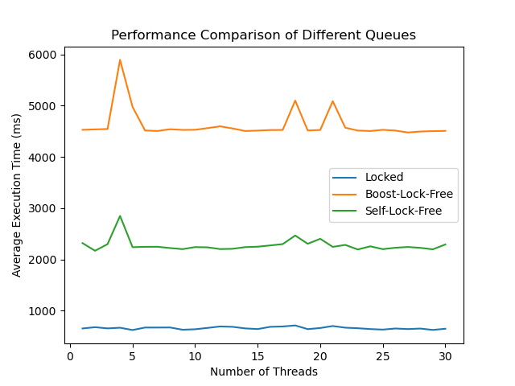
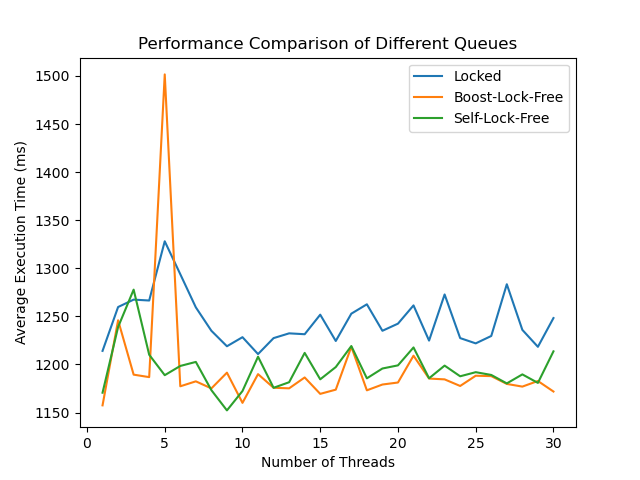

这篇笔记是在使用有锁和无锁数据结构进行日志收集类的性能测试学习笔记，主要进行比较的有三种不同的数据结果：经典的基于锁的日志队列，基于cas实现的无锁日志队列，boost库中实现的无锁队列。考虑到日志类logger的全局唯一性，这里的性能只测试日志类的push上传的效率，通过pop验证日志类的正确性。
一、日志队列的实现
1、经典的基于锁的日志队列
#ifndef LOCKED_QUEUE_H
#define LOCKED_QUEUE_H
#include <queue>
#include <mutex>
#include <condition_variable>
template <typename T>
class LockedQueue {
public:
void push(const T& value) {
std::unique_lock<std::mutex> lock(mutex_);
queue_.push(value);
cv_.notify_one();
}
bool try_pop(T& value) {
std::unique_lock<std::mutex> lock(mutex_);
if (queue_.empty()) {
return false;
}
value = queue_.front();
queue_.pop();
return true;
}
bool empty() const {
std::unique_lock<std::mutex> lock(mutex_);
return queue_.empty();
}
int size() const {
return queue_.size();
}
private:
std::queue<T> queue_;
mutable std::mutex mutex_;
std::condition_variable cv_;
};
#endif
调用push函数的时候会获得队列中的唯一的锁,没有获得锁的线程会陷入阻塞，把CPU的运行资源交给其他处于就绪态的线程，提高整体的计算机处理的性能。本人认为，这也是整体与个体之间的权衡，基于锁的线程主动将CPU的计算资源进行转移，基于无锁编程的数据结果使用CAS的原子指令进行循环判断，也就是经典的自旋锁的实现。而基于CAS的自旋锁的实现，一直占用CPU的计算资源，提高整体的push响应的效率，也是一种性能上的提升。
2、基于cas实现的无锁日志队列
这里实现的代码是多生产者和单消费者MPSC的多线程模型。
#include <atomic>
#include <memory>
#include <iostream>
template<typename T>
class lock_free_queue
{
private:
struct node
{
std::shared_ptr<T> data;
std::atomic<node*> next;
node(T data_) : data(std::make_shared<T>(data_)), next(nullptr) {}
node() : data(nullptr), next(nullptr) {}
};
alignas(64) std::atomic<node*> head; // 对齐以避免假共享
alignas(64) std::atomic<node*> tail; // 对齐以避免假共享
node* pop_head()
{
node* old_head = head.load(std::memory_order_relaxed);
while (old_head && !head.compare_exchange_weak(old_head, old_head->next.load(), std::memory_order_release, std::memory_order_relaxed));
return old_head;
}
public:
lock_free_queue() : head(new node), tail(head.load()){}
~lock_free_queue()
{
while (node* old_head = head.load())
{
head.store(old_head->next, std::memory_order_relaxed);
delete old_head;
}
}
void push(T new_value)
{
std::shared_ptr<T> new_data(std::make_shared<T>(new_value));
node* p = new node;
node* old_tail = tail.load(std::memory_order_relaxed);
node* new_next = nullptr;
while (!old_tail->next.compare_exchange_weak(new_next, p, std::memory_order_release, std::memory_order_relaxed)) {
new_next = nullptr;
old_tail = tail.load(std::memory_order_relaxed);
}
tail.compare_exchange_strong(old_tail, p, std::memory_order_release, std::memory_order_relaxed);
old_tail->data = new_data;
}
std::shared_ptr<T> pop()
{
node* old_head = pop_head();
if (!old_head)
{
return std::shared_ptr<T>();
}
std::shared_ptr<T> res = old_head->data;
delete old_head;
return res;
}
};
单消费者模型下只有一个线程能够成功获得队头节点的所有权，并进行队头的修改。获得队头节点所有权的线程可以直接进行内存的释放。
3、boost库中实现的无锁队列
这里使用了<boost/lockfree/queue.hpp>的无锁队列实现，
三、具体的效率测试
1、简单的push效率测试，创建多个线程，每个线程循环通过push函数上传NUM_ELEMENTS个int元素，这里设置
constexpr size_t NUM_ELEMENTS = 10000000;
以下是测试的代码：
#include <iostream>
#include <thread>
#include <vector>
#include <chrono>
#include <boost/lockfree/queue.hpp>
#include "locked_queue.h"
#include "lock_free_queue.h"
constexpr size_t NUM_ELEMENTS = 10000000;
constexpr size_t NUM_PRODUCERS = 4;
void producer_boost_lock_free(size_t start, size_t end, boost::lockfree::queue<int>& queue) {
for (size_t i = start; i < end; ++i) {
while (!queue.push(i));
}
}
void producer_locked(size_t start, size_t end, LockedQueue& queue) {
for (size_t i = start; i < end; ++i) {
queue.push(i);
}
}
void producer_self_lock_free_queue(size_t start, size_t end, lock_free_queue<int>& queue) {
for (size_t i = start; i < end; ++i) {
queue.push(i);
}
}
void test_queue(const std::string& queue_type, auto& queue, void (*producer_func)(size_t, size_t, decltype(queue)&)) {
std::vector<std::thread> threads;
auto start_time = std::chrono::high_resolution_clock::now();
for (size_t i = 0; i < NUM_PRODUCERS; ++i) {
size_t start = i * (NUM_ELEMENTS / NUM_PRODUCERS);
size_t end = (i + 1) * (NUM_ELEMENTS / NUM_PRODUCERS);
threads.emplace_back([start, end, &queue, producer_func]() {
producer_func(start, end, queue);
});
}
for (auto& t : threads) {
t.join();
}
auto end_time = std::chrono::high_resolution_clock::now();
auto duration = std::chrono::duration_cast<std::chrono::milliseconds>(end_time - start_time);
std::cout << "Testing " << queue_type << " queue:" << std::endl;
std::cout << queue_type << " queue total pushed: " << NUM_ELEMENTS << std::endl;
std::cout << queue_type << " queue total time taken: " << duration.count() << " milliseconds" << std::endl;
}
int main() {
boost::lockfree::queue<int> boos_lock_free_queue(NUM_ELEMENTS);
LockedQueue locked_queue;
lock_free_queue<int> self_lock_free_queue;
test_queue("Locked", locked_queue, producer_locked);
test_queue("Boost-Lock-Free", boos_lock_free_queue, producer_boost_lock_free);
test_queue("Self-Lock-Free", self_lock_free_queue, producer_self_lock_free_queue);
return 0;
}
以下是输出的实现结果：
Testing Locked queue:
Locked queue total pushed: 10000000
Locked queue total time taken: 626 milliseconds
Testing Boost-Lock-Free queue:
Boost-Lock-Free queue total pushed: 10000000
Boost-Lock-Free queue total time taken: 1636 milliseconds
Testing Self-Lock-Free queue:
Self-Lock-Free queue total pushed: 10000000
Self-Lock-Free queue total time taken: 1538 milliseconds
上述实验结果保证上述三个数据结构的正确性。
为了防止误差，实验设置累计10次实验的平均值，分析创建的线程数对多线程并发处理的影响，以下是实验结果图：

2、模拟现实的log日志push效率测试，创建多个线程，每个线程循环通过push函数上传NUM_ELEMENTS个log对象，这里设置
constexpr size_t NUM_ELEMENTS = 10000000;
log对象的定义和实现如下：
class Log {
public:
enum class Level : unsigned char { info, warn, error, fatal };
explicit Log(Level level, std::string &&text,
std::source_location sourceLocation = std::source_location::current(),
std::chrono::system_clock::time_point timestamp = std::chrono::system_clock::now(),
std::thread::id threadId = std::this_thread::get_id()) noexcept;
[[nodiscard]] auto toString() const -> std::string;
[[nodiscard]] auto toByte() const -> std::vector<std::byte>;
private:
Level level;
std::string text;
std::source_location sourceLocation;
std::chrono::system_clock::time_point timestamp;
std::thread::id threadId;
};
Log::Log(const Level level, std::string &&text, const std::source_location sourceLocation,
const std::chrono::system_clock::time_point timestamp, const std::thread::id threadId) noexcept :
level{level}, text{std::move(text)}, sourceLocation{sourceLocation}, timestamp{timestamp},
threadId{threadId} {}
auto Log::toString() const -> std::string {
static constexpr std::array<const char*, 4> levels{"info", "warn", "error", "fatal"};
std::ostringstream oss;
oss << levels[static_cast<int>(this->level)] << " "
<< this->timestamp.time_since_epoch().count() << " "
<< this->threadId << " "
<< this->sourceLocation.file_name() << ":"
<< this->sourceLocation.line() << ":"
<< this->sourceLocation.column() << ":"
<< this->sourceLocation.function_name() << " "
<< this->text << "\n";
return oss.str();
}
auto Log::toByte() const -> std::vector<std::byte> {
const auto log{this->toString()};
const auto size = log.size();
std::vector<std::byte> bytes(size);
std::memcpy(bytes.data(), log.data(), size);
return bytes;
}
以下是测试的代码：
#include <iostream>
#include <thread>
#include <vector>
#include <chrono>
#include <boost/lockfree/queue.hpp>
#include "locked_queue.h"
#include "lock_free_queue.h"
#include "log.hpp"
constexpr size_t NUM_LOGS = 10000000;
constexpr size_t NUM_PRODUCERS = 10;
std::vector<Log> pre_generated_logs;
void prepare_logs() {
for (size_t i = 0; i < NUM_LOGS; ++i) {
pre_generated_logs.emplace_back(Log::Level::info, "Log message " + std::to_string(i));
}
}
void producer_boost_lock_free(size_t start, size_t end, boost::lockfree::queue<Log*>& queue) {
for (size_t i = start; i < end; ++i) {
while (!queue.push(&pre_generated_logs[i]));
}
}
void producer_locked(size_t start, size_t end, LockedQueue<Log>& queue) {
for (size_t i = start; i < end; ++i) {
queue.push(pre_generated_logs[i]);
}
}
void producer_self_lock_free_queue(size_t start, size_t end, lock_free_queue<Log>& queue) {
for (size_t i = start; i < end; ++i) {
queue.push(pre_generated_logs[i]);
}
}
void test_queue(const std::string& queue_type, auto& queue, void (*producer_func)(size_t, size_t, decltype(queue)&)) {
std::vector<std::thread> threads;
auto start_time = std::chrono::high_resolution_clock::now();
for (size_t i = 0; i < NUM_PRODUCERS; ++i) {
size_t start = i * (NUM_LOGS / NUM_PRODUCERS);
size_t end = (i + 1) * (NUM_LOGS / NUM_PRODUCERS);
threads.emplace_back([start, end, &queue, producer_func]() {
producer_func(start, end, queue);
});
}
for (auto& t : threads) {
t.join();
}
auto end_time = std::chrono::high_resolution_clock::now();
auto duration = std::chrono::duration_cast<std::chrono::milliseconds>(end_time - start_time);
std::cout << "Testing " << queue_type << " queue:" << std::endl;
std::cout << queue_type << " queue total pushed: " << NUM_LOGS << std::endl;
std::cout << queue_type << " queue total time taken: " << duration.count() << " milliseconds" << std::endl;
}
int main() {
prepare_logs();
boost::lockfree::queue<Log*> boost_lock_free_queue(NUM_LOGS);
LockedQueue<Log> locked_queue;
lock_free_queue<Log> self_lock_free_queue;
test_queue("Locked", locked_queue, producer_locked);
test_queue("Boost-Lock-Free", boost_lock_free_queue, producer_boost_lock_free);
test_queue("Self-Lock-Free", self_lock_free_queue, producer_self_lock_free_queue);
return 0;
}
注意这里boost实现需要满足对象的平凡可拷贝类型，log中的string不满足，因此使用指针类型作为替代，不具备与其他的数据结果的比较性。
以下是输出的结果：
Testing Locked queue:
Locked queue total pushed: 8000000
Locked queue total time taken: 3456 milliseconds
Testing Boost-Lock-Free queue:
Boost-Lock-Free queue total pushed: 8000000
Boost-Lock-Free queue total time taken: 1273 milliseconds
Testing Self-Lock-Free queue:
Self-Lock-Free queue total pushed: 8000000
Self-Lock-Free queue total time taken: 2639 milliseconds
为了防止误差，实验设置累计10次实验的平均值，参考上述的实现分析线程数对多线程并发处理的影响，以下是实验结果图：

分析上述两个结果在简单的对int类型的push操作，boost实现的无锁队列和自定义的无锁队列在性能上都弱于基于锁的实现，在上述发生的原因是对int类型的push操作过于简单，发生锁竞争导致的进程切换的场景并不多，由此带来的额外开销并不大。同时，基于cas实现的无锁队列在实现上需要依赖大量CPU时钟周期的原子指令，并要进行大量的CPU的缓存同步以及内存屏障限制指令的重排，造成更高的性能浪费，在执行效率上不如锁实现。
在对log日志的实现中，模型现实的实现，在函数中调用
void producer_locked(size_t start, size_t end, LockedQueue<Log>& queue) {
for (size_t i = start; i < end; ++i) {
queue.push(pre_generated_logs[i]);
}
}
进行数据拷贝，增大了锁竞争的时间，又互斥锁代码的线程阻塞成为了主要的性能瓶颈，而CAS原子指令保持占用完整的CPU时间片生命周期，能够实现更快的响应，无锁编程的优势体现了出来，在执行效率上优于传统的实现。在探究有无锁编程的效率问题时，通过在push操作前添加一些耗时的任务，如计算斐波那契数列同样能体现出无锁编程的优势区间。
五、Batch脚本实验代码实现
constexpr size_t NUM_LOGS = 1000000;
constexpr size_t NUM_PRODUCERS = 4;
std::vector<Log> pre_generated_logs;
void prepare_logs() {
for (size_t i = 0; i < NUM_LOGS; ++i) {
pre_generated_logs.emplace_back(Log::Level::info, "Log message " + std::to_string(i));
}
}
void producer_boost_lock_free(size_t start, size_t end, boost::lockfree::queue<Log*>& queue) {
for (size_t i = start; i < end; ++i) {
while (!queue.push(&pre_generated_logs[i]));
}
}
void producer_locked(size_t start, size_t end, LockedQueue<Log>& queue) {
for (size_t i = start; i < end; ++i) {
queue.push(pre_generated_logs[i]);
}
}
void producer_self_lock_free_queue(size_t start, size_t end, lock_free_queue<Log>& queue) {
for (size_t i = start; i < end; ++i) {
queue.push(pre_generated_logs[i]);
}
}
void test_queue(const std::string& queue_type, auto& queue, void (*producer_func)(size_t, size_t, decltype(queue)&)) {
std::vector<std::thread> threads;
auto start_time = std::chrono::high_resolution_clock::now();
for (size_t i = 0; i < NUM_PRODUCERS; ++i) {
size_t start = i * (NUM_LOGS / NUM_PRODUCERS);
size_t end = (i + 1) * (NUM_LOGS / NUM_PRODUCERS);
threads.emplace_back([start, end, &queue, producer_func]() {
producer_func(start, end, queue);
});
}
for (auto& t : threads) {
t.join();
}
auto end_time = std::chrono::high_resolution_clock::now();
auto duration = std::chrono::duration_cast<std::chrono::milliseconds>(end_time - start_time);
std::cout << "Testing " << queue_type << " queue:" << std::endl;
std::cout << queue_type << " queue total pushed: " << NUM_LOGS << std::endl;
std::cout << queue_type << " queue total time taken: " << duration.count() << " milliseconds" << std::endl;
}
int main() {
const char* queue_type_env = std::getenv("QUEUE_TYPE");
const char* num_threads_env = std::getenv("NUM_THREADS");
if (!queue_type_env || !num_threads_env) {
std::cerr << "QUEUE_TYPE and NUM_THREADS environment variables must be set." << std::endl;
return 1;
}
prepare_logs();
std::string queue_type = queue_type_env;
int NUM_PRODUCERS = std::stoi(num_threads_env);
if (queue_type == "Locked") {
LockedQueue<Log> locked_queue;
test_queue("Locked", locked_queue, producer_locked);
} else if (queue_type == "Boost-Lock-Free") {
boost::lockfree::queue<Log*> lock_free_queue(NUM_LOGS);
test_queue("Boost-Lock-Free", lock_free_queue, producer_boost_lock_free);
} else if (queue_type == "Self-Lock-Free") {
lock_free_queue<Log> self_lock_free_queue;
test_queue("Self-Lock-Free", self_lock_free_queue, producer_self_lock_free_queue);
} else {
std::cerr << "Unknown queue type: " << queue_type << std::endl;
return 1;
}
return 0;
}
import subprocess
import time
import os
import matplotlib.pyplot as plt
# 定义常量
NUM_EXPERIMENTS = 5 # 每个线程数下进行10次实验
THREAD_RANGE = range(1, 31) # 线程数范围从1到30
QUEUE_TYPES = ["Locked", "Boost-Lock-Free", "Self-Lock-Free"]
# 存储结果的字典
results = {
queue_type: {i: [] for i in THREAD_RANGE} for queue_type in QUEUE_TYPES
}
def run_experiment(num_threads, queue_type):
env = os.environ.copy()
env["NUM_THREADS"] = str(num_threads)
env["QUEUE_TYPE"] = queue_type
start_time = time.time()
subprocess.run(["./batchtest"], env=env, check=True)
end_time = time.time()
return (end_time - start_time) * 1000 # 返回时间（毫秒）
def average(lst):
return sum(lst) / len(lst)
# 运行实验
for num_threads in THREAD_RANGE:
for queue_type in QUEUE_TYPES:
for _ in range(NUM_EXPERIMENTS):
duration = run_experiment(num_threads, queue_type)
results[queue_type][num_threads].append(duration)
# 计算平均值
avg_duration = average(results[queue_type][num_threads])
print(f"Average time for {queue_type} with {num_threads} threads: {avg_duration} ms")
# 绘制图像
for queue_type in results:
plt.plot(THREAD_RANGE, [average(results[queue_type][i]) for i in THREAD_RANGE], label=queue_type)
plt.xlabel("Number of Threads")
plt.ylabel("Average Execution Time (ms)")
plt.title("Performance Comparison of Different Queues")
plt.legend()
plt.savefig("queue_performance.png")
plt.show()